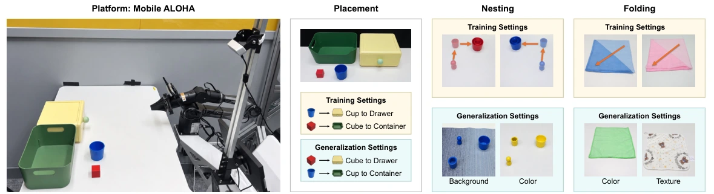

Mobile ALOHA · physical evaluationTransferable Behavior Embeddings from Unlabeled Videos for Policy Learning
Learning motion, reached configuration, and execution status from unlabeled manipulation videos, then transferring this information into robot policy features through auxiliary supervision.
37.2% → 50.2% clean π0.5 mean success across 11 RoboTwin 2.0 tasks, with no additional inference cost.
My contribution and evaluation
I was responsible for the representation-probing experiments, the π0.5 simulation experiments in Table 1, and all experiments in Table 2. I also contributed to real-robot experimental design and execution.
On two unseen object–destination pairings, the Mobile ALOHA study improves from 0/80 to 49/80 successful trials. Evaluation also covers visual generalization, completion transfer, progress, and spatial readouts.
Manuscript Tables 1–3. Simulation: 100 rollouts per task and condition. Real robot: 40 trials per condition.